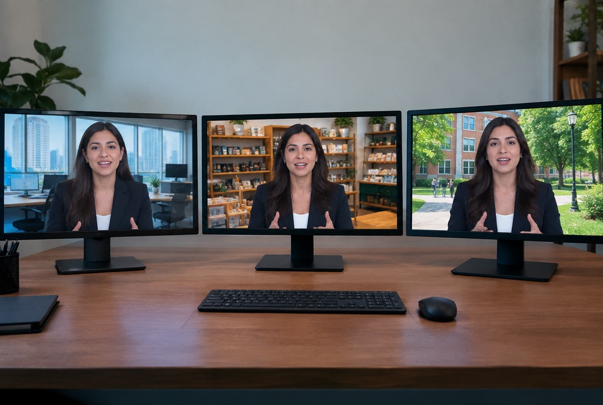

Consistent messaging
The same clear presenter across every video.
Give us the script. We turn it into a presenter video, in the language and tone your audience expects, without booking a studio or a speaker each time.
An AI spokesperson video is a talking-presenter video generated from a script. MMC writes and approves the script with you, produces the presenter video with matching voice and lip movement, adds captions and branding, and delivers versions in the languages you need.
A sample from an on-file presenter. Yours is briefed to your script, your brand and your languages, then delivered ready for every channel.
We shape your message into a short, spoken script.
Pick the look, voice and language that fits your audience.
Video, voice and lip movement are produced and reviewed.
Captions, logo, background and every format you need.

The same clear presenter across every video.
One script, produced for the languages your buyers use.
Change a line of the script and regenerate.
Your colours, logo and captions on every version.
Product explainers, offer announcements and how-to videos.
Product walkthroughs, onboarding videos and update messages.
Welcome messages, course overviews and admissions updates.
The presenters are AI-generated. If you want a specific real person, that needs their written approval and their footage.
A range of Indian and international languages. We confirm your list when we scope the work.
Voice and lip movement are generated together and reviewed by an editor before delivery.
Yes. Update the script and we regenerate the affected parts.
Yes. We deliver the formats each channel needs.
Tell us what you sell and who you sell to. We will say where this service fits and where it does not.